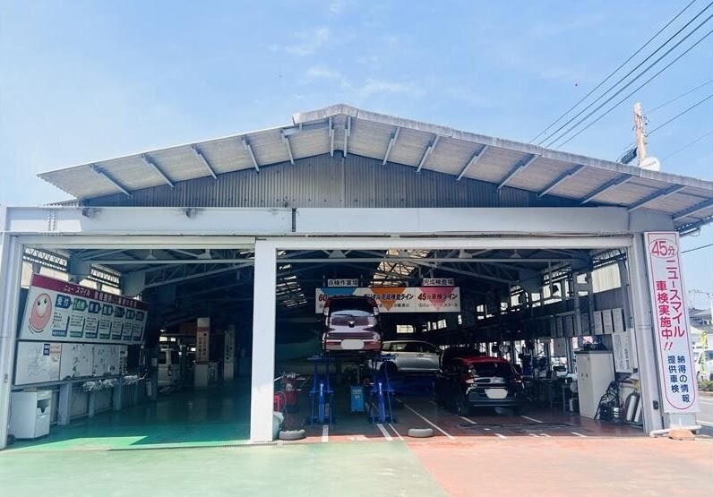

03車検・点検・整備
岡山市中区の車検・点検・整備。スズキ・ダイハツの代理店ですが国産車は全メーカーに対応し、輸入車もお受けします。ニュースマイル車検の料金表（軽 50,760円〜）、法定点検、タイヤ交換、ドライブレコーダー取付まで。

国産車は全メーカー、輸入車もお受けします
スズキ・ダイハツの代理店ですが、国産車は全メーカーの車検・点検・整備に対応しています。輸入車もお受けします（国産車より日数をいただきます）。約60年におよぶ実績、経験をもとに質の高いサービスをご提供します。
大切なおクルマをながく乗りたい方には、どんな点検や修理が必要かを丁寧にご説明します。オイル交換などの日常の整備から、タイヤ交換、ドライブレコーダーの取り付け、カスタムまでお受けします。ご希望の場合は引取り・納車サービスも承ります。
| コース | 軽自動車 全車 | 小型自動車 1.0t迄 | 中型自動車 1.5t迄 | 大型自動車 2.0t迄 |
|---|---|---|---|---|
ニューサービスコース 立ち合い車検／所要時間の目安 60分 | 50,760円〜 | 62,660円〜 | 71,960円〜 | 82,910円〜 |
スマイルコースおすすめ 1日お預かり／洗車サービス・ご来店時レンタカー無料 | 57,360円〜 | 72,560円〜 | 81,860円〜 | 92,260円〜 |
プレミアムコース 1〜2日お預かり／洗車・フロントガラス撥水・ボディコート撥水・ご来店時レンタカー無料 | 62,860円〜 | 79,160円〜 | 89,560円〜 | 101,610円〜 |
| うち法定諸費用 | 38,110円 | 47,810円 | 56,010円 | 64,210円 |
表示価格は「法定諸費用＋基本技術料」から早期予約割引（60日前）2,200円を引いた総額（税込）です。部品代とその工賃は含まれていません。お車の状態により部品交換で料金が追加になる場合があります。
法定諸費用は令和8年11月現在のもので、以降の改定は反映していません。エコカー減税対象車や初度登録から13年を超える車は重量税が異なります。OBD検査対象車は別途料金が必要です。ご希望の場合は引取り・納車サービスも承ります。
車検だけでなく、日常の点検・取り付けもお任せください
法定点検（6ヶ月・12ヶ月）
車検と車検のあいだの法定点検を実施しています。定期的に見ておくことで、不具合を早く見つけて大きな修理を防ぎます。
タイヤ交換・タイヤ販売
YOKOHAMA（ヨコハマタイヤ）・ブリヂストンを取り扱っています。銘柄・サイズ選びからご相談ください。夏タイヤ・冬タイヤの履き替えもどうぞ。
ドライブレコーダー取付
前後カメラ・駐車監視タイプなど、ご希望に合わせて機種選びから取り付けまで行います。持ち込みのご相談も承ります。
各種パーツ取付
ナビ・ETC・バックカメラ・エアロ・ホイールなど、さまざまなパーツの取り付けに対応します。お気軽にご相談ください。
- 車検
- 法定点検
- 一般整備・修理
- オイル交換
- タイヤ交換
- ドライブレコーダー取付
- パーツ取付
- カスタム
よくある質問
- 輸入車の車検もお願いできますか？
- お受けします。スズキ・ダイハツの代理店ですが、国産車は全メーカーの車検・点検・整備に対応しており、輸入車もお受けします。ただし国産車より日数をいただきます。
- 国産車ならどのメーカーでも見てもらえますか？
- 国産車は全メーカーに対応しています。自社の指定工場で車検から一般整備まで行います。
- 車検はどのくらい時間がかかりますか？
- コースによって異なります。ニューサービスコースは立ち合い車検で所要時間の目安が60分、スマイルコースは1日お預かり、プレミアムコースは1〜2日お預かりです。
- 車検中の代車はありますか？
- スマイルコースとプレミアムコースは、ご来店時のレンタカーが無料です。
- クルマを持って行けないのですが、引取りに来てもらえますか？
- ご希望の場合は引取り・納車サービスを承ります。お電話またはお問い合わせフォームでご相談ください。
- 早めに予約すると安くなりますか？
- 60日前までの早期予約で2,200円割引になります。掲載の料金は、この早期予約割引を引いた総額（税込）です。
- 表示されている料金に含まれないものはありますか？
- 部品代とその工賃は含まれていません。お車の状態により部品交換で料金が追加になる場合があります。また、初度登録から13年を超える車やエコカー減税対象車は重量税が異なり、OBD検査対象車は別途料金が必要です。
- 車検以外の点検もお願いできますか？
- 6ヶ月点検・12ヶ月法定点検を実施しています。オイル交換、タイヤ交換（YOKOHAMA・ブリヂストン取扱）、ドライブレコーダーやナビ・ETCなど各種パーツの取り付けもお受けします。